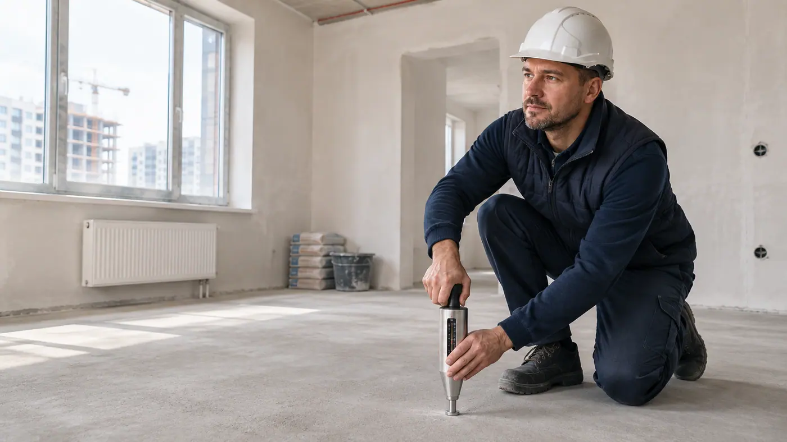
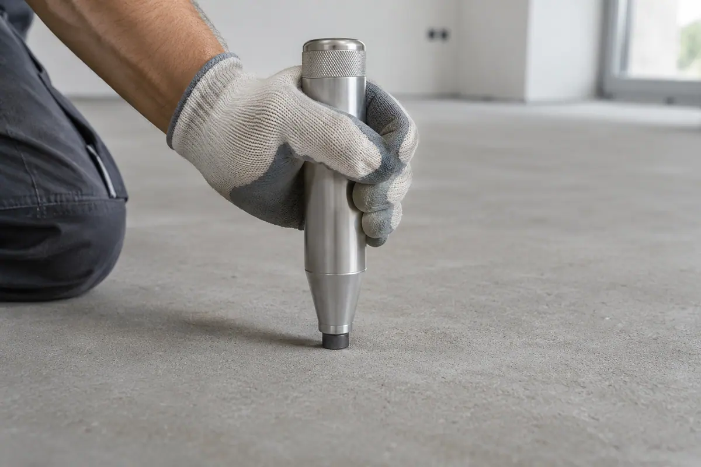

Прочность основания
Специалист проводит инструментальную оценку цементно-песчаной или бетонной стяжки пола.
Инструментально оцениваем цементно-песчаную или бетонную стяжку, чтобы определить её прочность и пригодность к дальнейшей укладке напольного покрытия.

Проверка помогает оценить качество основания пола до следующего этапа отделки. Её можно добавить к приёмке квартиры, если важно отдельно оценить стяжку.
Специалист проводит инструментальную оценку цементно-песчаной или бетонной стяжки пола.
Оценка помогает понять, пригодна ли стяжка для дальнейшей укладки напольного покрытия.
Проверка прочности — дополнительная услуга. Сообщите о ней при записи, чтобы включить её в заказ.

Для оценки используют измеритель прочности бетона RGK SK-60. Прибор работает как склерометр — молоток Шмидта.
Проверка относится к качеству цементно-песчаной или бетонной стяжки. Если нужен отдельный выезд, заранее уточните возможность и его стоимость.
Добавить проверку к приёмке квартиры →Отдельная оценка уместна, когда в квартире есть стяжка и перед укладкой напольного покрытия важно понять её прочность.
Добавьте проверку к выезду специалиста по приёмке и обсудите её при оформлении заказа.
Инструментальная оценка помогает определить, подходит ли основание для дальнейшей укладки напольного покрытия.
Стоимость зависит не только от проверки: отдельно учитываются выезд специалиста и удалённость жилого комплекса.
Коротко отвечаем о назначении услуги, приборе и стоимости отдельного выезда.
Оставьте контакты и укажите жилой комплекс. Подскажем, как заказать оценку прочности стяжки и рассчитать стоимость выезда.